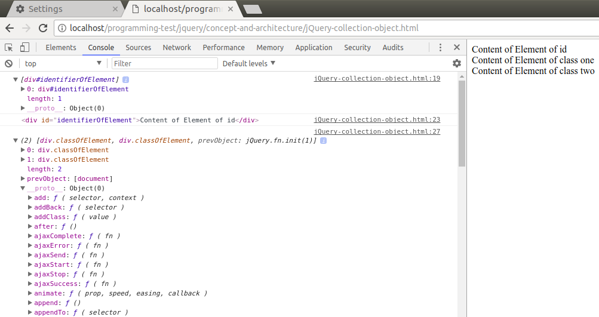
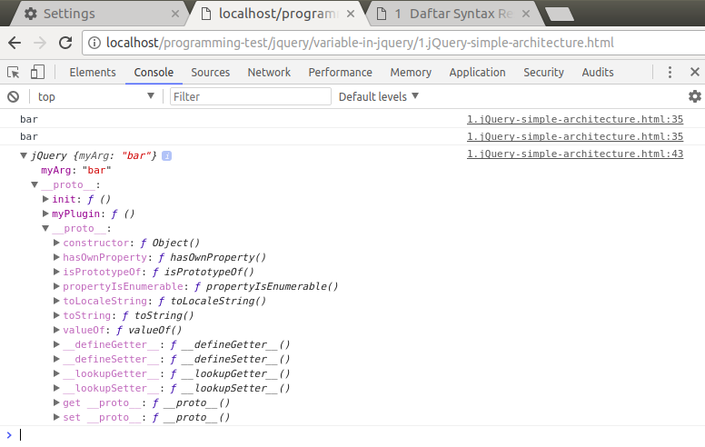

JQuery¶
JQuery merupakan salah satu library pada javascript.
JQuery akan mempermudah dalam penggunaan javascript, seperti manipulasi element, ajax, pengaksesan object dan lainnya.
Ketika membuat atau mengambil suatu element dalam jQuery maka jQuery akan me-return element tersebut dalam sebuah collection (koleksi object). Yang mana kita akan dapat menggunakan collection tersebut untuk melakukan berbagai manipulasi.
Note
Sebenarnya Object Collection dalam jQuery hampir mirip dengan array, karena terdapat adanya property length, namun sebenarnya bukanlah array, namun lebih kompleks dari object itu sendiri.
Contoh object collection pada jQuery
<!DOCTYPE html>
<html>
<head>
<title></title>
</head>
<body>
<div id="identifierOfElement">Content of Element of id</div>
<div class="classOfElement">Content of Element of class one</div>
<div class="classOfElement">Content of Element of class two</div>
<script src="../jquery-3.2.1.js" integrity="sha256-DZAnKJ/6XZ9si04Hgrsxu/8s717jcIzLy3oi35EouyE=" crossorigin="anonymous"></script>
<script type="text/javascript">
var idElement = $("#identifierOfElement");
console.log(idElement);
var getElementOfId = $("#identifierOfElement").get(0);
console.log(getElementOfId);
var classElementOfId = $(".classOfElement");
console.log(classElementOfId);
var getElementofClassOne = $(".classOfElement").get(0);
console.log(getElementofClassOne);
var getElementofClassTwo = $(".classOfElement").get(1);
console.log(getElementofClassTwo);
</script>
</body>
</html>
Result
Keuntungan menggunakan jQuery :
compability
Tidak kesemua browser memiliki interpret javascript yang sama, yang artinya antara satu browser satu dengan yang lain mungkin ada sedikit perbedaan dalam menggunakan syntax javascript.
Namun dengan menggunakan jQuery maka kesemua syntax nya dapat digunakan oleh semua browser (hampir semua).
contoh:
var target = document.getElementById( "target" ); target.innerHTML = "<td>Hello <b>World</b>!</td>"
sedangkan dengan jQuery:
// Setting the inner HTML with jQuery. var target = document.getElementById( "target" ); $( target ).html( "<td>Hello <b>World</b>!</td>" );
Warning
Dalam javascript sendiri sebenarnya ada perbedaan antara append dan appendChild.
Bisa dilihat pada referensi Fungsi Javascript append dan appendChild
convenience
Penggunaan syntax javascript sendiri masih dirasa kurang baik dalam penggunaannya. Dengan jquery maka penggunaan syntax javascript akan lebih mudah dan lebih sedikit.
Misal:
// Inserting a new element after another with the native DOM API. var target = document.getElementById( "target" ); var newElement = document.createElement( "div" ); target.parentNode.insertBefore( newElement, target.nextSibling );
sedangkan di jQuery jauh lebih simpel dan pendek:
// Inserting a new element after another with jQuery. var target = document.getElementById( "target" ); var newElement = document.createElement( "div" ); $( target ).after( newElement );
Jquery Object architecture¶
jQuery sedikit merombak code dalam javascript. Tujuannya adalah untuk mempermudah dalam manipulasi dengan syntax javascript.
Penggunaan tanda jQuery atau $ pada jQuery adalah merepresentasikan object di dalam jQuery.
Object tersebut dapat digunakan untuk menggunakan member object di dalamnya.
Semisal adalah menyeleksi suatu element.
Penggunaannya adalah $(argumentContainElementSelector) atau jQuery(argumentContainElementSelector).
Setelah menggunakan jquery object (yang diberikan argument berupa selector element) diatas maka keselanjutnya kita dapat menggunakan member object yang telah ada di jQuery untuk memanipulasi element tersebut, semisal mengetahui value suatu attribute dalam element tersebut.
Jquery juga telah mengganti penggunaan property prototype menjadi property fn untuk mempermudah dalam menggunakan pewarisan.
Contoh implementasi arsitektur jQuery
<!DOCTYPE html>
<html>
<head>
<title></title>
<script type="text/javascript">
(function() {
var jQuery = function(arg) { // core constructor
// ensure to use the `new` operator
// will instance the jQuery object
if (!(this instanceof jQuery)) {
return new jQuery(arg);
}
// store an argument for this example
this.myArg = arg;
//..
};
// create `fn` alias to `prototype` property
jQuery.fn = jQuery.prototype = {
init: function () {
//statement
}
//...
};
// expose the library
window.jQuery = jQuery;
})();
// Extension:
// extension plugin like datatable, or another plugin
// And in jquery have own plugin too
jQuery.fn.myPlugin = function () {
console.log(this.myArg);
return this; // return `this` for chainability
};
///using the extension
jQuery("bar").myPlugin(); // "bar" (execute console of myArg)
console.log(jQuery("bar").myPlugin());
/*
return
bar
jQuery {myArg: "bar"}
the expand of jQuery object
myArg:"bar"
__proto__:
init:ƒ ()
myPlugin:ƒ ()
__proto__ : Object
*/
</script>
</head>
<body>
</body>
</html>
<!--
tanda jQuery atau $ dalam jQuery merupakan constructor jQuery yang akan diisi oleh suatu parameter (atau mungkin tanpa parameter)
dengan penggunaan tanda tersebut maka kita akan mengakses property (member object) dalam jQuery
seperti mungkin suatu implementasi DOM (append, parent, chilren), window (load), AJAX dll, kesemuanya dapat dipanggil sebagai extension
jQuery sendiri telah menyertakan extension nya sendiri (atau biasa disebut API) seperti untuk implementasi DOM, AJAX
selain itu juga banyak extension luar yang menggunakan jQuery seperti Datatable, FullCalendar, dll.
sedangkan property fn sendiri merupakan pengganti dalam penggunaan prototype dalam jQuery.
-->
Result
jQuery sendiri telah menyertakan extension nya sendiri (atau biasa disebut API) seperti untuk implementasi DOM, AJAX, dan lainnya.
Selain itu juga, terdapat extension lain (extension tambahan) yang ada di jQuery seperti datatable, FullCalendar, yang dibuat oleh developer lain sebagai pembantu dalam menggunakan aplikasi berkaitan dengan javascript.
Note
Naming convention variable pada jquery
Dalam jQuery untuk mendeklarasikan suatu variable biasa dengan menambahkan tanda $ di depannya, tujuannya untuk membedakan antara variable jQuery dan variable javascript.
Misal seperti berikut:
var $myHeaderDiv = $('#header');
var myHeaderDiv = document.getElementById('header');
Dalam contoh diatas variable $myHeaderDiv adalah object di jQuery maka kita akan dapat menggunakan api pada object tersebut.
misal:
$myHeaderDiv.fade();
Penggunaan jQuery atau $ adalah sama
misal:
var $myHeaderDiv = jQuery(myHeaderDiv); //assign
$(myHeaderDiv).fade(); //use